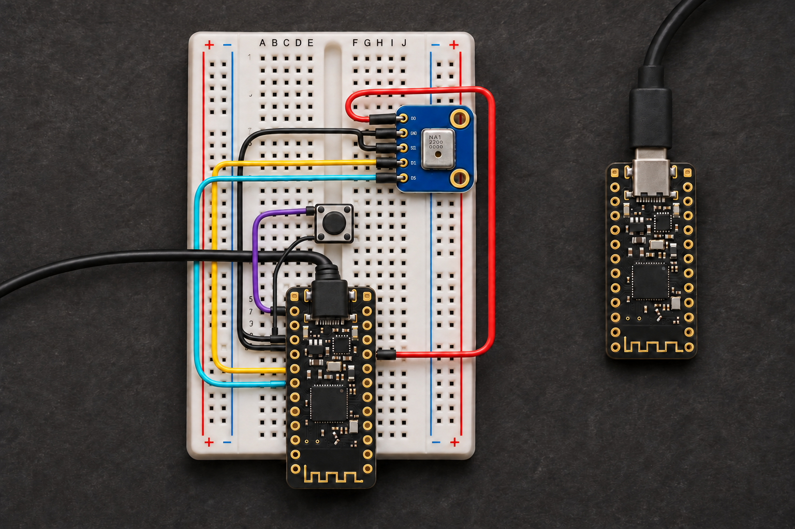
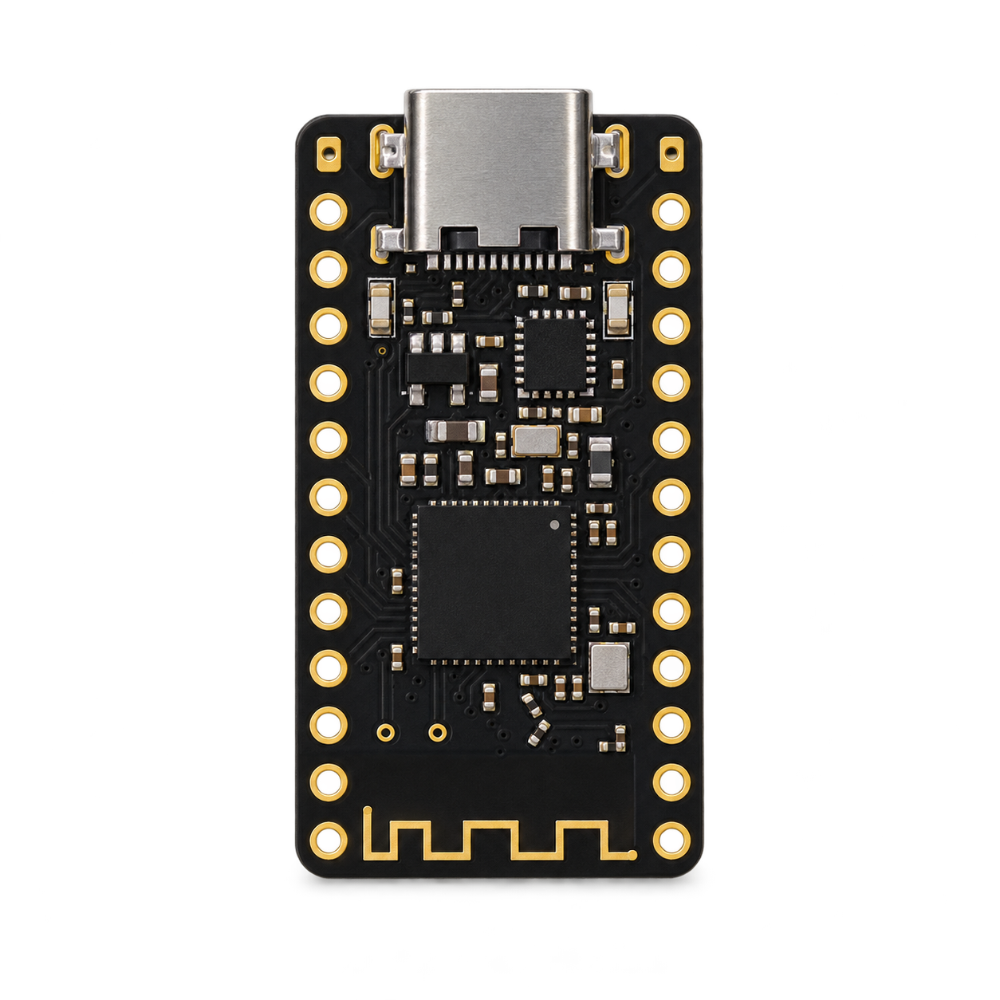
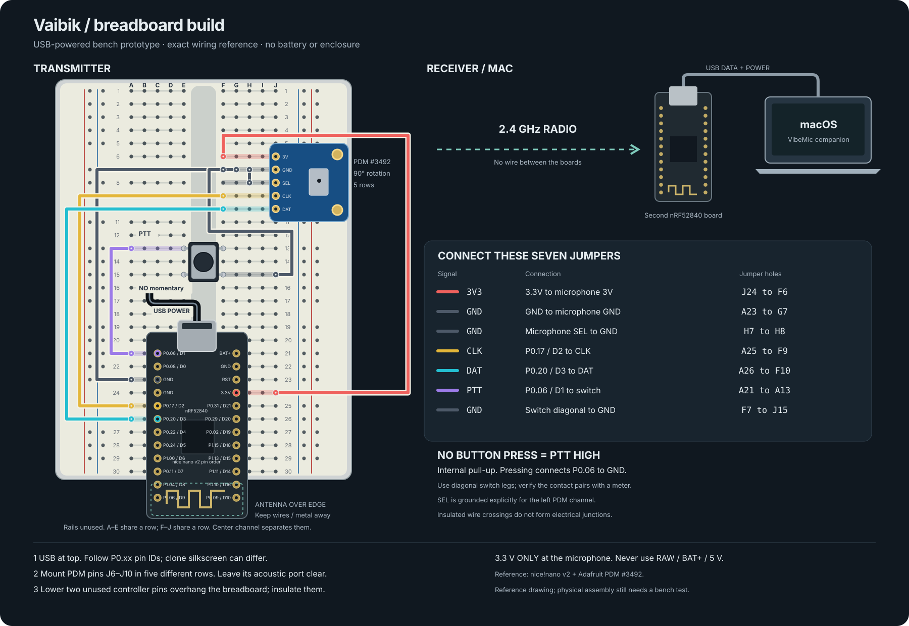
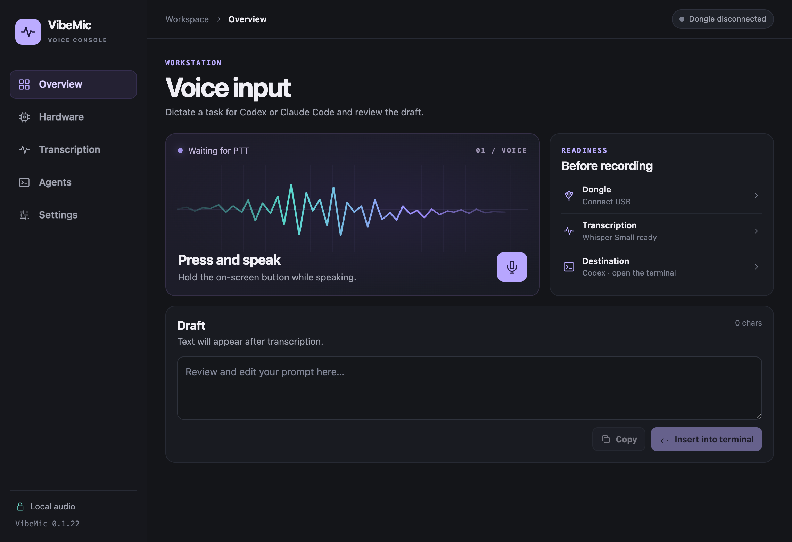

A workbench experiment in voice coding
Less typing.
More building.
A button, a microphone, and your next idea. Hold to talk. Release to get a draft in Claude Code or Codex. Read it, then send it yourself.

01 / Gather the parts
Small bill of materials.
Big breadboard energy.
Two boards. One is the handheld transmitter; the other plugs straight into your computer. The first build runs on USB power.

Individually generated component illustrations; pin positions are defined by the reference diagram.
Use nRF52840 boards with native USB and a supported UF2 bootloader. A classic ATmega32U4 Pro Micro is a different board.
02 / Connect the dots
Seven wires to a first take.

Transmitter connections
Match the P0.xx names on your board. D1–D3 refer to the nice!nano layout, viewed face up with USB at the top.
Give each microphone pin its own breadboard row. Use opposite diagonal contacts on a four-leg tactile switch. Keep the antenna clear.
| nRF52840 | Connect to |
|---|---|
| 3.3 V | MIC 3V |
| GND | MIC GND + SEL |
| P0.17 / D2 | MIC CLK |
| P0.20 / D3 | MIC DAT |
| P0.06 / D1 | PTT button → GND |
Checked against: nice!nano pinout ↗ · Adafruit PDM pinout ↗ · netlist ↗
- 01
Wire the transmitter
Follow the pin table with power disconnected. The receiver needs only a USB data connection to your computer.
- 02
Flash both boards
Open Boards in VibeMic. Enter UF2 mode, save a pair code, then flash Dongle and Transmitter with the same code. The app backs up CURRENT.UF2 when available.
- 03
Check audio, choose your agent
Use the PDM USB probe or radio audio check first. Select PTT Dictation Mic, download a Whisper model, and open a Claude Code or Codex CLI session in the companion app.
- 04
Hold. Talk. Release. Review.
The transcript becomes a draft. Check it before pressing Enter in the agent. The prototype has one PTT button; it does not send prompts automatically.
04 / VibeMic companion · v0.1.22
Your voice.
Your local workflow.
Vaibik is the hardware project. VibeMic is its desktop companion: local Whisper transcription, firmware flashing, audio diagnostics, and an embedded terminal for Claude Code or Codex.
- English and Russian interface, independent of dictation language
- Separate microphone selection for dictation and calls
- Drafts stay editable; sending is your decision

macOS 13+. Developer ID signed; Apple notarization is pending. Linux native AppImage/FUSE launch still needs a hardware check. Windows is deferred.
An honest bench log
A working foundation.
Still a prototype.
USB audio + HID, prerecorded speech over the radio pair, local transcription, and draft insertion into the embedded terminal.
Live external PDM and the physical button, 2–3 metre reliability, power consumption, and insertion into separate desktop app windows.